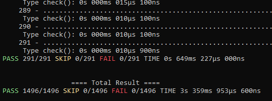

3-ish year anniversary #
The project turns three years today. I created the project on the 2nd August in 2023. The goal back then wasnt a compiler but a game creation toolkit with its own scripting language similar to RPG Maker or Godot. The project scope was way too big for someone with limited free time so I had to trim it down quite a bit. I shifted my focus to the language, since thats what I'm mostly interested in.
The project was renamed to Aalenien in October 2023. I tinkered with a few concepts and ended up with a barebone language that transpiled to C++ before I decided to rename the project again.
The project was officially renamed to Caracal in October 2025. I guess October is a good time for renames? The name was taken from one of my older compiler projects since I liked the name and because caracals are cool. My target for the language has been native compilation with LLVM since then and I made alot of progress.
The project has roughly 600 commits, 1500 tests and sits at around 23k lines of C++ currently, not counting my test and report libraries.
Finished IR layer and codegen rewrite #
I finished splitting the old LLVM codegen into the new IR layer since the last blog post. The new IR layer is similar to the LLVM IR, which made the new codegen straightforward to implement.
One of the main reasons for the rework was my broken codegen for nested control flow, this is fixed now and works. The new IR layer also allowed me to add my own optimization passes after lowering. There is only constant folding and dead code elimination right now but its easily extendable.
The result of the whole rewrite is that ALL of the current tests pass lowering and codegen.

Global init const #
I added a few new features to the language, one of them are global init constants. Caracal doesnt support global variables but there might be cases where we want to assign them during startup. The only place where they can be assigned is during the main function. They are immutable after that point.
One example is that I want to create globals that contain the path to the executable or the program startup time.
g :: init i32;
def main() i32
{
// g can only be assigned once here
g = 7;
return readG();
}
def readG() i32
{
// g cant be changed at this point
return g;
}Builtin types and operators #
I also changed how builtin types are declared to the compiler. Previously they were hardcoded in C++ but I moved them all to the prelude pass. The definitions in the prelude dictate which operators are available on a type or how many bits integers are for example. If a type definition is lacking declarations for operators then they can't be used, which is useful for disallowing equality checks on floats for example.
The prelude currently contains definitions for bool, u8, i8, u16, i16, u32, i32, u64, i64, f32, f64, rawptr and cstring.
#builtin(kind = float, bits = 32)
type f32
{
def f32.add(lhs: f32, rhs: f32) f32 {}
def f32.subtract(lhs: f32, rhs: f32) f32 {}
def f32.multiply(lhs: f32, rhs: f32) f32 {}
def f32.divide(lhs: f32, rhs: f32) f32 {}
def f32.negate(value: f32) f32 {}
// omit equals/ not equals for floats because they are usually causes of bugs
def f32.lessThan(lhs: f32, rhs: f32) bool {}
def f32.lessOrEqual(lhs: f32, rhs: f32) bool {}
def f32.greaterThan(lhs: f32, rhs: f32) bool {}
def f32.greaterOrEqual(lhs: f32, rhs: f32) bool {}
}One thing I decided on is that division should always return a float. If the user wanted integer division, then they have to wrap it in a floor function. I think this makes sense but might get changed in the future if it feels clunky and causes more harm than good.
#builtin(kind = int, bits = 32, signed = true)
type i32
{
// ...
def i32.divide(lhs: i32, rhs: i32) f32 {}
// ...
}Bitwise functions #
The type definitions in the prelude also contain static bitwise functions for builtin types. I dont want to add special operators for these because I feel like they arent used as much as other operators. Another nice thing is that I dont have to worry about their precedence if they are functions.
#builtin(kind = int, bits = 32, signed = true)
type i32
{
// ...
def i32.bitAnd(lhs: i32, rhs: i32) i32 {}
def i32.bitOr(lhs: i32, rhs: i32) i32 {}
def i32.bitXor(lhs: i32, rhs: i32) i32 {}
def i32.bitNot(value: i32) i32 {}
def i32.shiftLeft(value: i32, amount: i32) i32 {}
def i32.shiftRight(value: i32, amount: i32) i32 {}
// ...
}A slightly modified test file shows how to use the bitwise functions here:
def stuff()
{
bitwiseAnd := i32.bitAnd(12, 10) == 8;
bitwiseOr := i32.bitOr(12, 10) == 14;
bitwiseXor := i32.bitXor(12, 10) == 6;
bitwiseNot := i32.bitNot(0) == -1;
bitwiseShiftLeft := i32.shiftLeft(3, 2) == 12;
bitwiseShiftRight := i32.shiftRight(-8, 1) == -4;
bitwiseMask := i32.shiftLeft(1, 33) == 2;
}Arrays and slices #
Another big feature that the language now has are fixed arrays, dynamic arrays and slices.
The syntax for arrays is [type;size], and [val1, val2, val3] for the literal initializers.
def fixedArray()
{
data: [i32; 4] = [1, 2, 3, 4];
}Syntax for dynamic arrays is similar but uses an underscrope for the size, and their literals have to end in ...
def dynamicArray()
{
data: [i32; _] = [1, 2, 3, 4, ...];
}The language doesnt use symbols for indexing, unlike other popular languages, but has intrinsic fields and methods on both array types. My reasoning for that is similar to not having special syntax for bitwise operators. I might change my mind on that in the future, who knows.
def dynamicArray()
{
xs := [1, ...]; // the dynamic array type is infered to be [i32, _]
xs.add(2); // we can add values to the dynamic array
xs.set(0, 4); // set value at index 0 to 4
first :: xs.at(0); // get the value at index 0
length :: xs.length; // get the length of the array
view :: xs.slice(); // get a slice to the array
}Slices arent as useful right now because you cant specify their ranges yet but they support the same intrinsics as arrays already.
More diagnostics #
Alot more diagnostics got added since the last post too, and I'm currently sitting just above 100 different kinds. I also added another test project just for diagnostics where I try to have at least one test per kind.
There are still alot of holes that I need to cover but they are already useful.
Three years in #
It feels like the project made alot of progress since the first commit and I learned alot since then, but there are a few things I would do different nowadays.
The start of the project felt very slow because I only had a lexer and part of a parser but kept reworking and refining the lexer without being able to run code. So the next time i'll work on a similar project, I'll start with a slim pipeline from lexing to codegen. It is way more fun to work with the compiler now that i can actually compile my code and see the console output, which is very motivating.
I really like having full control of the test and report libraries, I can just change what I dont like or add needed features.
Right now the compiler isnt at the point where I can use it for anything useful yet but I think I'm slowly getting there.
Whats next #
I'm working on improving strings, they are currently just const char* for llvm codegen.
Not sure what to work on after that but there is some tech debt that I need to clean up. The docs on the website also need an update, they havent been worked on since the first website version.
Armin